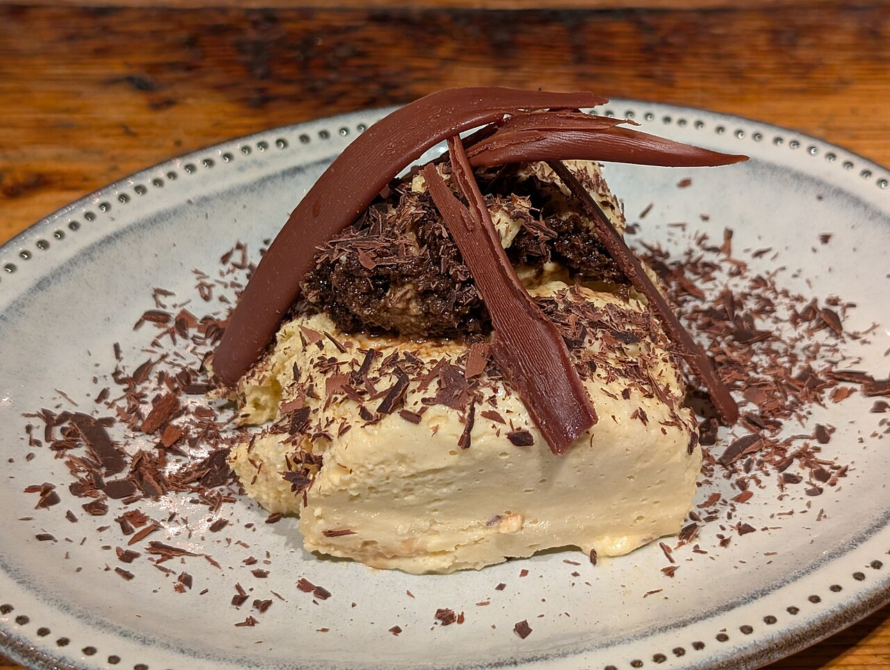

Chi siamo
Una trattoria di famiglia, come quelle di una volta
Ogni giorno, a due passi dal mercato di Piazza Terralba, prepariamo piatti semplici e fatti in casa: quelli che si mangiavano la domenica dalla nonna, ma a pranzo durante la settimana.
Niente fronzoli: una tovaglia, un bicchiere di vino, un primo, un secondo con contorno e il caffè. Il menu cambia tutti i giorni, in base a quello che offre il mercato.
🍝
Cucina casalinga
Primi, secondi e dolci preparati ogni mattina.
🧺
Accanto al mercato
Ingredienti freschi, dal banco alla cucina.
💶
Prezzi onesti
Menu fisso completo a 12 €, pausa pranzo senza pensieri.
♿
Accessibile
Locale accessibile anche in sedia a rotelle.

